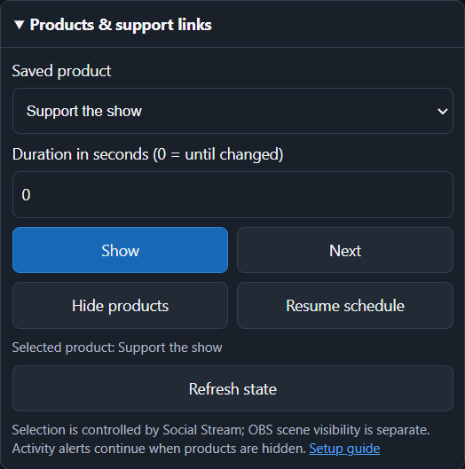

Quick setup
- In Social Stream Ninja, open Global settings and tools → Mechanics.
- Enable remote API control of extension. Keep Social Stream Ninja active during the stream.
- Copy the Session ID shown in Social Stream Ninja.
- In OBS, open Docks → Custom Browser Docks.
- Name the dock Social Stream Controls and use this URL:
https://socialstream.ninja/obs-control-dock.html?session=YOUR_SESSION_ID- Select Apply, close the settings window, and place the new dock where you want it in OBS.
- Confirm the dock says Connected. If the URL did not include a session, enter it in the dock and select Save & connect.
Which server settings are required?
| Seadistamine | For this control dock | Purpose |
|---|---|---|
| remote API control of extension | Required | Lets the control dock send commands to the Social Stream app or extension on channel 1. |
| Enable Dock to use and publish via API server | Not required | Optional direct server transport for the Streaming Chat Dock. |
| Send chat messages to API server | Not required | Used when an external program needs to receive captured chat on channel 4. |
| Dock sends its commands to Extension via server | Not required | Used when the Streaming Chat Dock itself must send commands back through the server. |
&server is not required on the control-dock or Credits URLs. The control dock already opens its own WebSocket control connection. OBS's WebSocket Server Settings are unrelated and can remain off.If you intentionally use direct API transport for dock.html, use the generated Dock link after enabling its server setting, or add &server to that Dock URL. This is optional and does not change how Credits commands work.
Using it with end-of-stream Credits
- Before the stream, set Credits Trigger Mode juurde Background collection. This lets the app collect chatters, members, and donors while the Credits Browser Source is closed.
- Add the generated Credits URL to the OBS ending scene using the same Session ID.
- At the end of the stream, switch to the ending scene first so the Credits Browser Source is loaded and connected.
- Select Start Credits in the OBS control dock.
Vt Credits Roll Guide for collection modes, filters, and troubleshooting missing names.
What each Credits button does
| Button | Result |
|---|---|
| Start Credits | Runs the real collected list. |
| Preview | Runs the real list without consuming page-collected entries. |
| Test Credits | Displays built-in participant, member, and donor examples. It does not prove that real names were collected. |
| Reset Saved Credits | Clears the saved Background collection for the active Social Stream session. |
Products & support links
In Social Stream, open Monetization, save and enable your products, then choose Open OBS control dock. Copy that private control URL into OBS's Custom Browser Docks. For a products-only dock, use obs-control-dock.html?session=YOUR_SESSION_ID&commerce.
Keep Social Stream on and enable remote API control of extension as described above. Add the separate monetization overlay URL as an OBS Browser Source for viewers. The control dock is for you; never share its session URL with viewers.


- Show: select a saved product and pin it. Next: advance from the current product.
- Hide products: hide promotional cards; activity alerts continue. Resume schedule: return to your saved first-product or rotation setting.
- Duration: Show, Next, and Hide return to the saved schedule after this many seconds. Use 0 to keep the override until changed.
- State: refreshes every five seconds while this section is open. It reports Social Stream's selection, not whether an OBS scene is visible. Lost or unconfirmed connections disable product buttons until state is available again.
The dock, popup, Stream Deck, and Event Flow share the same controls. Edit and save the catalog in Social Stream. See Product controls for setup and automation.
Other controls and their required pages
- Featured Chat: keep the normal Streaming Chat Dock and featured overlay connected on the same session.
- Timer: keep the Timer page connected on the same session if it needs to display the timer.
- Waitlist & Giveaway: configure the waitlist in Social Stream first; Reset clears the current entries.
The dock reconnects automatically if the API connection drops. A green Connected status only confirms the control connection; the target page still needs to be open when a command displays something.
Direct API examples
The same buttons can be scripted with HTTP GET requests:
https://io.socialstream.ninja/SESSION_ID/creditsStart
https://io.socialstream.ninja/SESSION_ID/creditsPreview
https://io.socialstream.ninja/SESSION_ID/creditsTest
https://io.socialstream.ninja/SESSION_ID/creditsResetReplace SESSION_ID with the active Social Stream session. See Käsud ja API or the full API sandbox for more actions.
Tõrkeotsing
- Session needed: use the exact Session ID from Social Stream, without the word
session=. - Disconnected: enable remote API control, confirm Social Stream is active, and reopen the dock after changing its URL.
- Credits says no source accepted the command: reveal the ending scene, wait for its Browser Source to load, then retry.
- Test works but Start is empty: Test uses built-in names. Select Background collection before the stream and confirm normal chat sources are capturing.
- Featured Chat button has no visible effect: confirm the Streaming Chat Dock and featured overlay use the same session and are loaded.